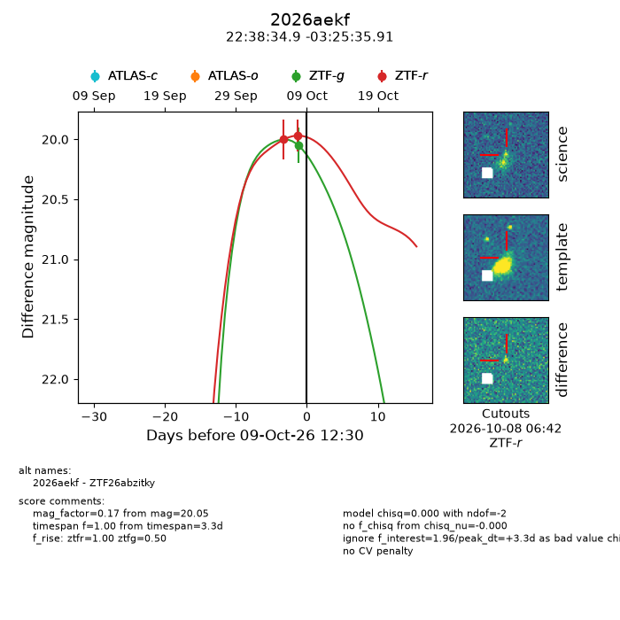
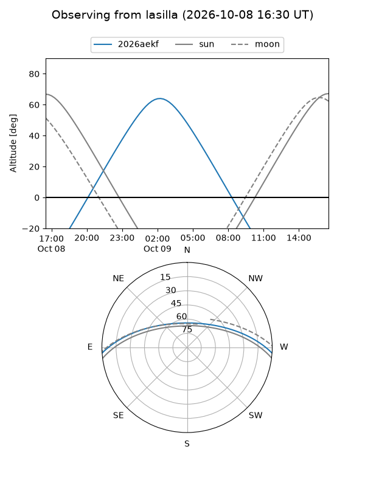
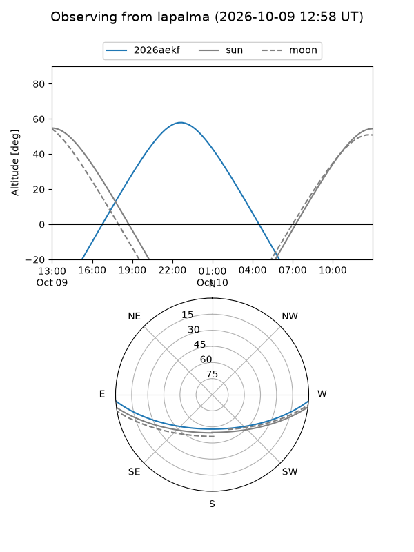
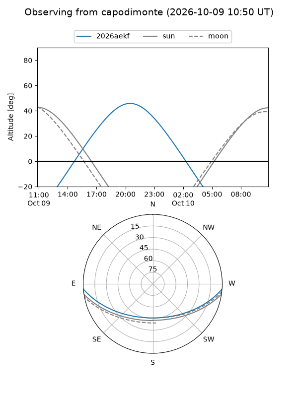
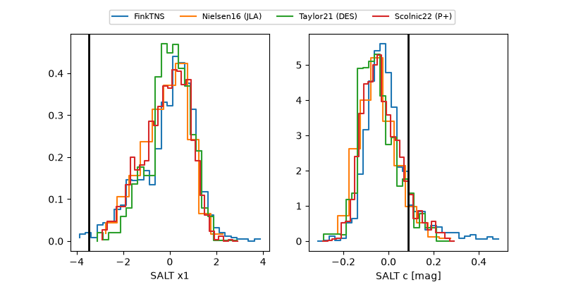

2026aekf
Target 2026aekf at 2026-10-09 12:32
Aliases and brokers:
FINK-ZTF: ztf.fink-portal.org/ZTF26abzitky
Lasair-ZTF: lasair-ztf.lsst.ac.uk/objects/ZTF26abzitky
ALeRCE-ZTF: alerce.online/object/ZTF26abzitky
YSE-PZ: ziggy.ucolick.org/yse/transient_detail/2026aekf
TNS name: wis-tns.org/object/2026aekf
Direct TNS query: direct search
alt names
ZTF26abzitky (ztf,fink_ztf)
2026aekf (tns,yse)
Coordinates:
equatorial (ra, dec) = 339.6452,-3.42664
equatorial (HMS+DMS) = 22:38:34.86,-03:25:35.91
galactic (l, b) = (63.8600,-50.39991)
Flags:
peak dt: +3.3
Photometry:
last ztfg=20.05, ztfr=19.97
1 ztfg, 2 ztfr detections
Lightcurve

Visibility



Additional plots
